Especialista certificada pelo SENAI/SC em Fundamentos e Criação de Prompts. Unindo curadoria artística a uma metodologia técnica rigorosa para escalar sua produção de ativos digitais.
Vamos criar juntos?Acredito que a Inteligência Artificial só alcança seu real valor quando guiada por visão e estratégia humana. Sou formada em IA na Prática pelo SENAI/SC, com especialização técnica em fundamentos de IA e criação de prompts estruturados. Domino a arquitetura de modelos de linguagem e metodologias de teste para garantir resultados consistentes e com identidade.
Minha expertise é validada tanto na teoria quanto em cases de alto impacto. Entre dezembro de 2025 e janeiro de 2026, desenvolvi um projeto experimental no TikTok explorando o potencial do Sora 1. Em apenas 44 dias, produzi 86 vídeos que somaram mais de 2,8 milhões de visualizações, unindo tecnologia de vídeo generativo à sensibilidade da música gospel para criar uma conexão profunda com o público.
Essa entrega reflete-se em resultados concretos no mercado global: possuo mais de 2.800 imagens aceitas no portfólio da Adobe Stock e sou autora de dois livros infantis publicados na Amazon KDP, com edições completas em português e inglês.
Meu foco é converter a complexidade tecnológica em soluções criativas, eficientes e, acima de tudo, com um profundo propósito humano.
Domínio de prompts estruturados e metodologias como few-shot e zero-shot.
Foco em arquitetura de LLMs e pensamento computacional.
Aplicação de prompts estruturados para criação de campanhas, análise de métricas e otimização de conversão.
Estratégias de IA focadas em prospecção inteligente, automação de fluxos e personalização do atendimento.
Desenvolvimento de materiais didáticos assistidos e suporte ao aprendizado com foco em pensamento computacional.
Otimização de processos seletivos e gestão de talentos através de análise técnica assistida por IA.
Portfólio oficial Dutz Creative Studio na Adobe Stock, com mais de 2.800 ativos digitais aprovados e validados para licenciamento comercial em escala global.
Vamos criar juntos?Explorando o potencial máximo do Sora 1. Mais de 2,8 milhões de views em menos de dois meses, provando o poder da IA na criação de conteúdo.
Vamos criar juntos?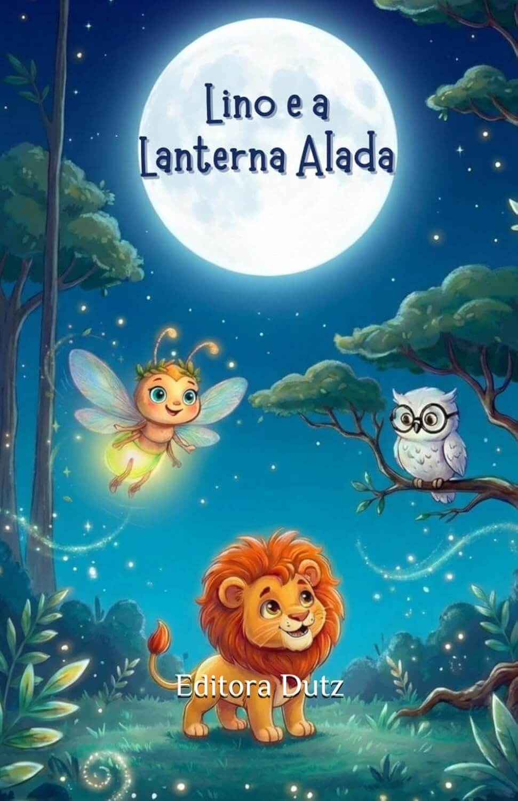
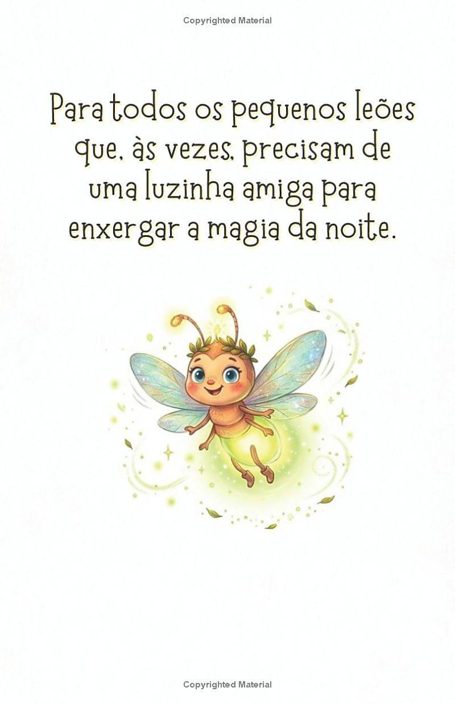
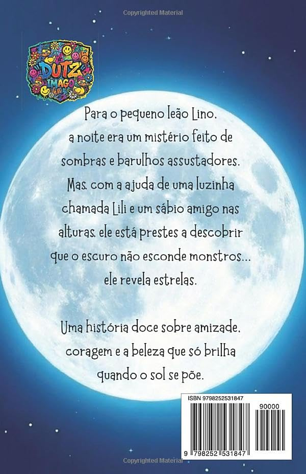
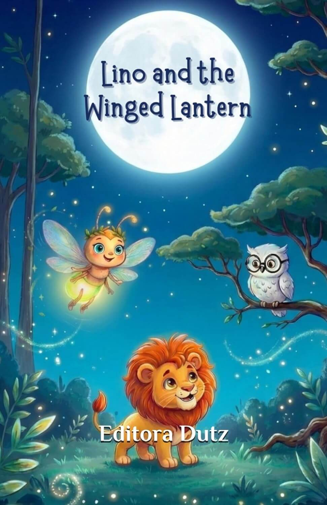
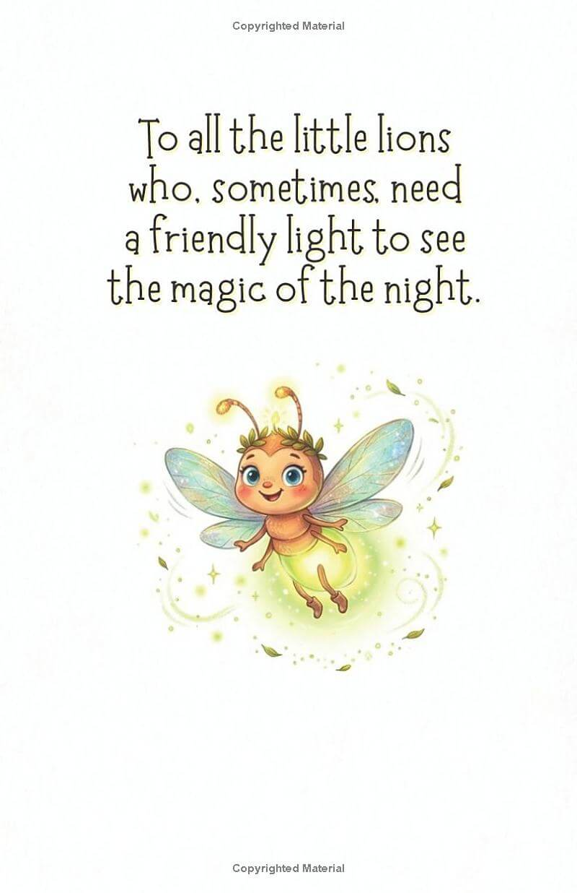
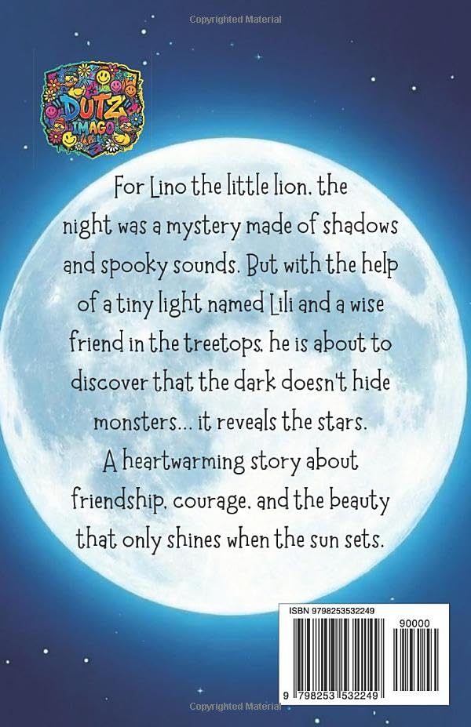
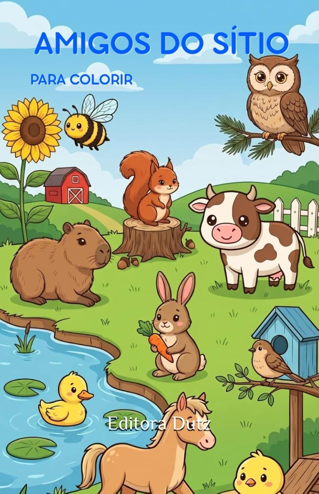
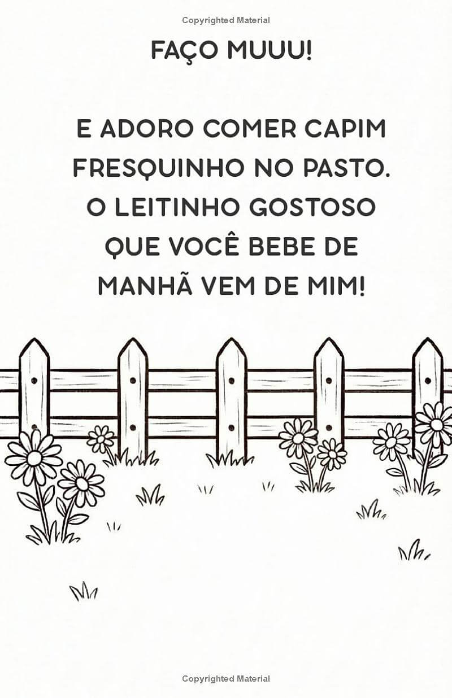
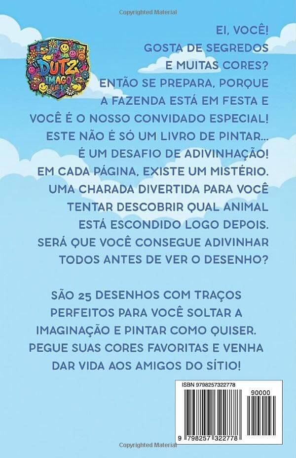
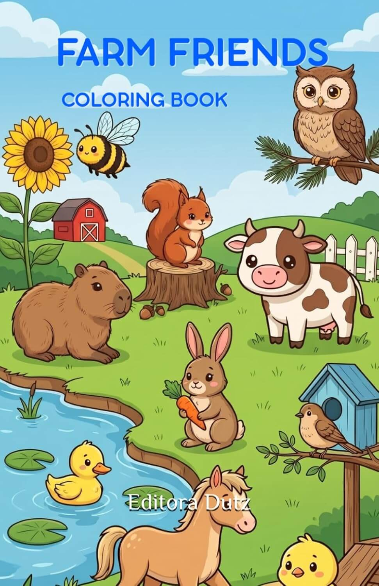
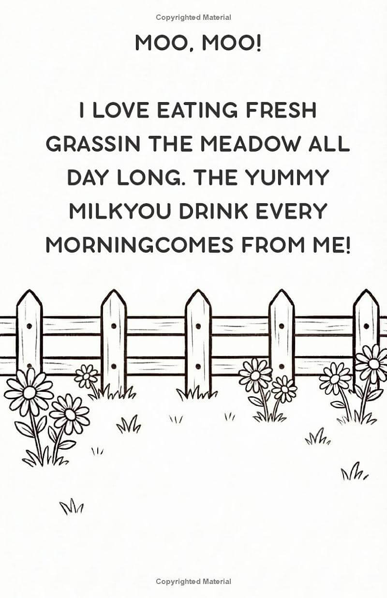
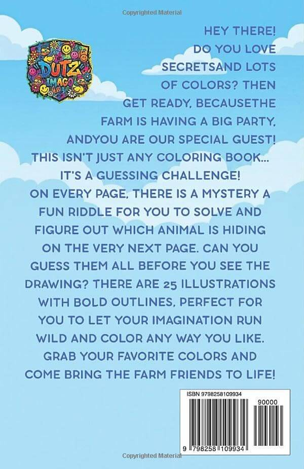
A fronteira entre tecnologia e literatura. Livros infantis desenvolvidos com fluxos avançados de IA Generativa, garantindo consistência visual e narrativa em publicações de escala global pela Editora Dutz.
Vamos criar juntos?